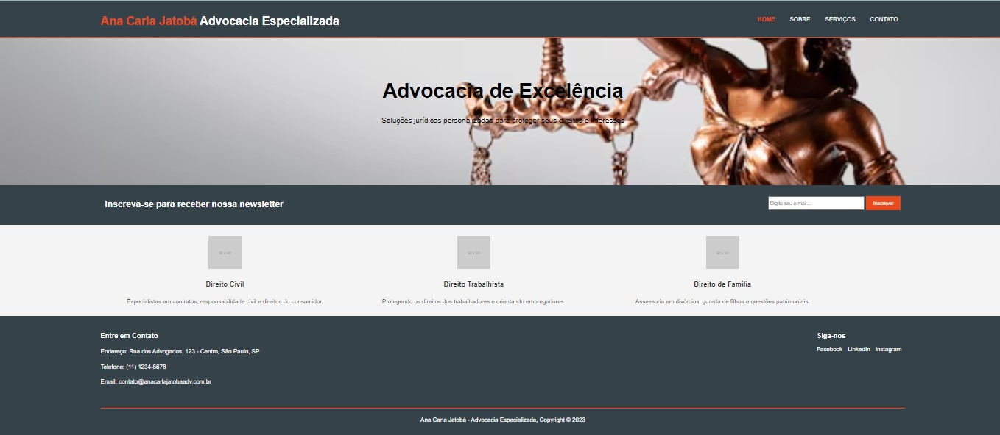
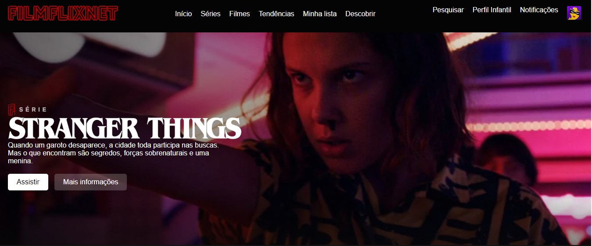
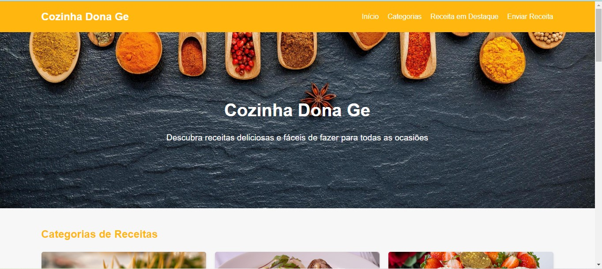

Meu Portfólio
ACJ ADVOCACIA

Este projeto é um site para o escritório de advocacia especializada de Ana Carla Jatobá, desenvolvido como parte do estudo de Geovana no curso da Digital Innovation One (DIO).
Ver projetoFILMFLIXNET

FilmFlixNet é uma plataforma de streaming de filmes e séries inspirada em serviços populares como Netflix. Este projeto foi criado como uma demonstração de habilidades em desenvolvimento web front-end.
Ver projetoCozinha Dona Ge

Cozinha Dona Ge é um site de receitas culinárias que oferece uma variedade de receitas deliciosas e fáceis de fazer para todas as ocasiões.
Ver projeto